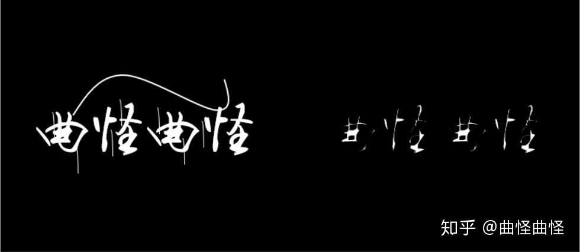

OpenCV 图像处理之膨胀与腐蚀
OpenCV 图像处理之膨胀与腐蚀
1、什么是膨胀与腐蚀
膨胀与腐蚀属于形态学范围，具体的含义根据字面意思来理解即可。但是更形象的话就是“增肥”与“减肥”。
它们的用途就是用来处理图形问题上。总结性的来说：膨胀用来处理缺陷问题；腐蚀用来处理毛刺问题。
膨胀就是把缺陷给填补了，腐蚀就是把毛刺给腐蚀掉了。这里其实说的并不严谨，也是为了大家理解方便。下面我们就用实例来进行演示。
2、形态学处理——膨胀
我们先引入一张图片进行分析。 程序实现：
1 | img = cv2.imread('Pic/corrode.png') |
图中我们可以看到，这张图片是一个二值图片（只有黑白），而且还增加了一些毛刺。而且还包含字体中还包含一些小的间隙（缺陷）。
下面我们对这张图片进行膨胀处理。膨胀是如何处理的呢？对于一个像素点，我们需要先指定对每个像素点膨胀的范围。
这里我们指定范围为3 3的矩阵，kernel（卷积核核）指定为全为1的3 3矩阵，卷积计算后，该像素点的值等于以该像素点为中心的3 * 3范围内的最大值。由于我们是二值图像，所以只要包含周围白的部分，就变为白的。
总结： 只要原图片3 3范围内有白的，该像素点就是白的。 *程序实现：
1 | kernel = np.ones((3, 3), dtype=np.uint8) |
分析： 上图我们可以看出毛刺部分变粗，与此同时字体中的间隙也变小，补了缺陷部分。
2.1 更改卷积核大小
如果我们更改核的大小（4 4），也就改变了膨胀的程度。 只要4 4范围内有白的就变成白的。
1 | kernel_2 = np.ones((4, 4), dtype=np.uint8) # 卷积核变为4*4 |
2.2、更改迭代次数
1 | kernel = np.ones((3, 3), dtype=np.uint8) |
分析： 更改迭代次数将为2，将对图片进行2次的膨胀操作
3、形态学处理——腐蚀操作
腐蚀操作和膨胀操作相反，也就是将毛刺消除，判断方法为：在卷积核大小中对图片进行卷积。取图像中（3 3）区域内的最小值。由于我们是二值图像，也就是取0（黑色）。 总结： 只要原图片3 3范围内有黑的，该像素点就是黑的。
程序实现：
1 | kernel = np.ones((3, 3), dtype=np.uint8) |
分析： 可以看出来，毛刺部分被清除掉，但与此同时，字体边缘部分也向里凹陷了一部分。
3.1、更改卷积核大小
1 | kernel_2 = np.ones((4, 4), dtype=np.uint8) |
分析： 卷积核变大后，我们发现他已经腐蚀的部分有点多了，字体原来的部分也被清除。
3.2、更改迭代次数
1 | kernel = np.ones((3, 3), dtype=np.uint8) |

分析： 增加迭代次数后，腐蚀变得更加厉害，所以应该选择合适的迭代次数。
4、开运算和并运算
开运算：先腐蚀，在膨胀 闭运算：先膨胀，在腐蚀
我们在上面的膨胀和腐蚀的图片中可以看到，图片大小程度上都受到了损失，字体信息缺失或者变粗等等。如果我们不想更改原有信息，即字体粗细。那么我们可以使用上面的两种运算。例如开运算，先对字体进行变细，在对字体进行变粗，整体上字体粗细不会发生变化。毛刺信息在腐蚀的时候就已经消除了，膨胀也不会膨胀出多余信息。
4.1、开运算
1 | opening = cv2.morphologyEx(img, cv2.MORPH_OPEN, kernel, 1) |
分析： 我们发现大部分毛刺已经消除，而且字体信息也没有发生变化，这也就是我们想要的效果。虽然仍然有一部信息没有被清除，我们只需要调整卷积核的大小就可以实现。
4.2、闭运算
1 | closing = cv2.morphologyEx(img, cv2.MORPH_CLOSE, kernel) ## 有缺陷，填补缺陷 |
分析： 字体不改变的前提下，我们把字体缺陷信息补全。
5、梯度计算
梯度计算主要显示的是边缘信息。计算的方法：
膨胀的图像 - 腐蚀的图像
我们明显的看出，用大一圈的图像减去小一圈的图像正好就是边缘的信息。
1 | gradient = cv2.morphologyEx(img, cv2.MORPH_GRADIENT, kernel) |
分析： 我们可以看出来，我们形成了一个空心的字体样式
6、高帽和黑帽
高帽计算：原始图像 - 开运算结果 黑帽计算：闭运算结果 - 原始图像
6.1、高帽计算
我们知道开运算的结果就是去除毛刺，我们原始图像减去开运算结果就是我们要消除的毛刺信息。
1 | top_hat = cv2.morphologyEx(img, cv2.MORPH_TOPHAT, kernel) |
分析： 可以看出来，所有的毛刺信息我们全部提取了出来。
6.2、黑帽操作
高帽操作显示毛刺，那么黑帽就是显示缺陷。
1 | black_hat = cv2.morphologyEx(img, cv2.MORPH_BLACKHAT, kernel) |
分析： 这里我们看的不是很明显，我们只需要只要黑帽所处理的问题是什么。针对不同的场景应用不用的方法。